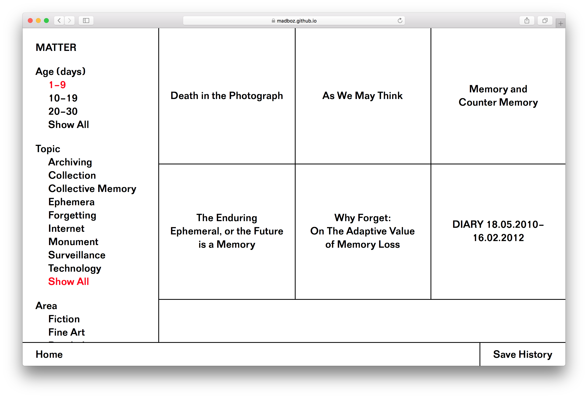
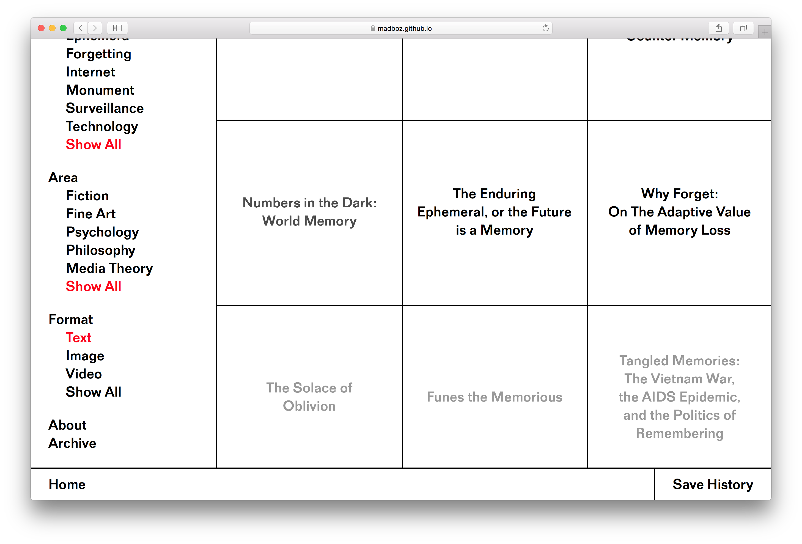
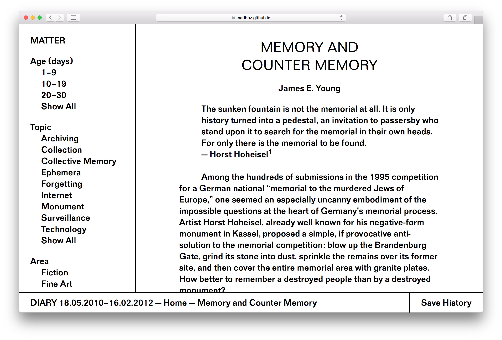
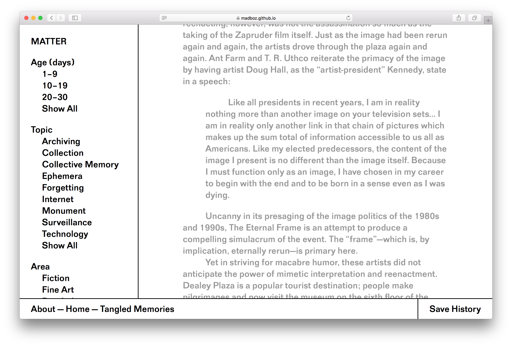
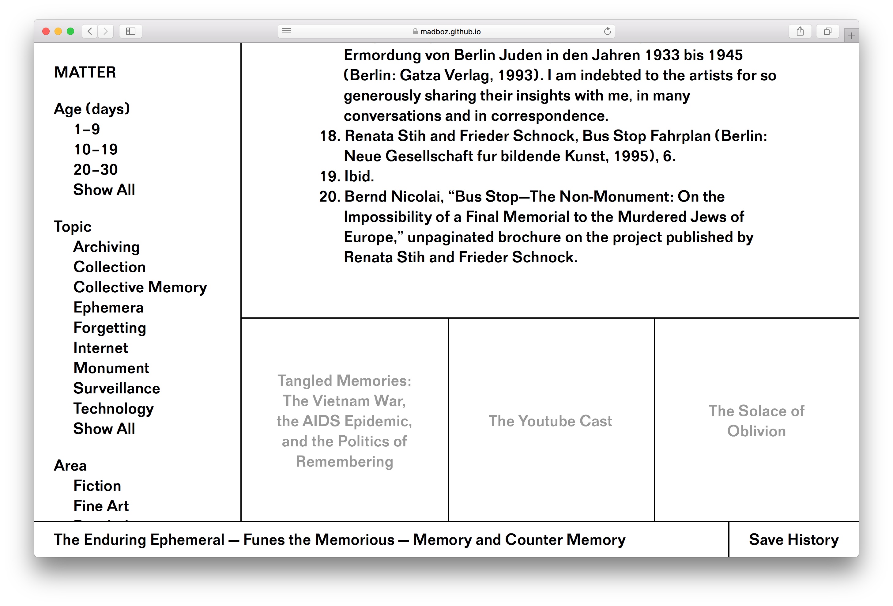
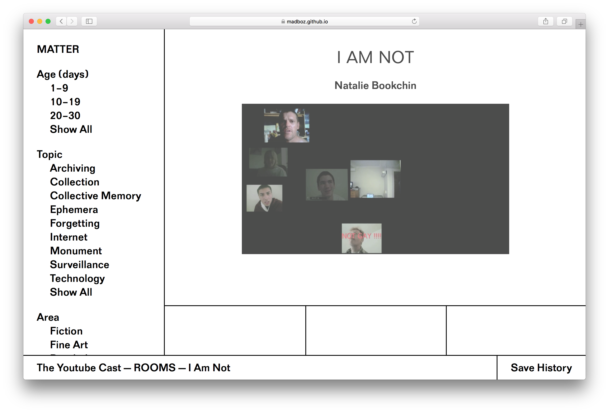

Matter, Spring 2018

Matter is an online publication and collaborative research project centered on the themes of media and memory.
The site acts as a catalogue of ideas that explore media and memory; such as archiving, collective memory, and memory in the digital age. Through a diverse range of article formats: long-form texts, image essays, video playlists, Matter presents ideas from multiple fields of study.
All posted articles have programmed expiration dates that cause them to fade away for thirty days. Once they have expired they are no longer accessible and are added to the archive. The content of the site is ever-evolving to ensure that no browsing experience is the same. Users have the ablility to save the content they viewed to their desktop.
     